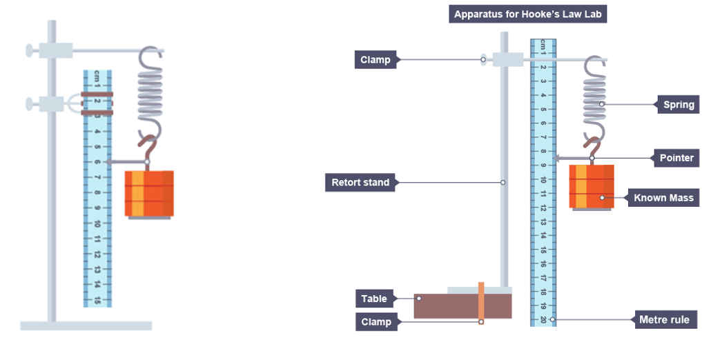
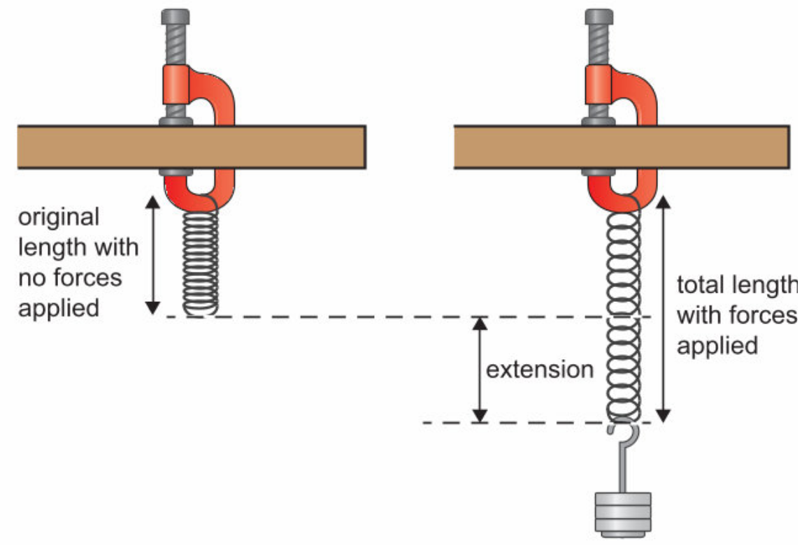
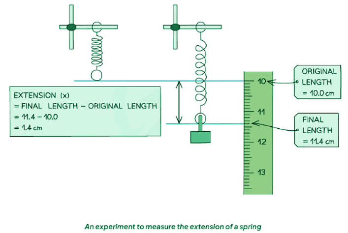
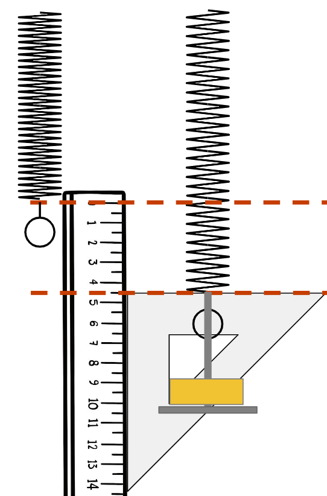
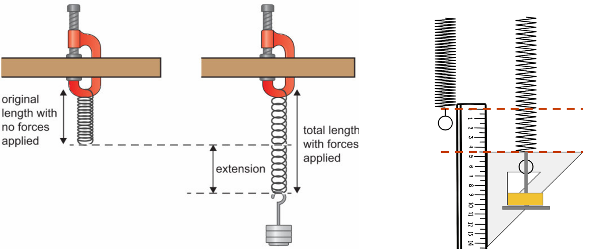
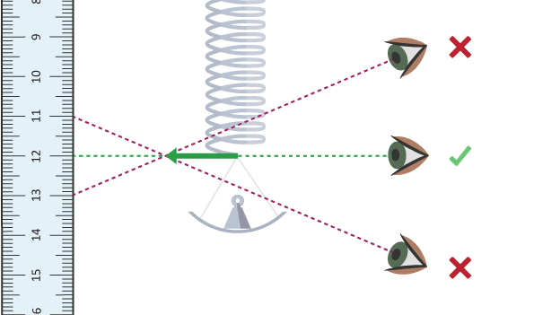
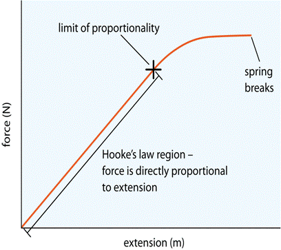
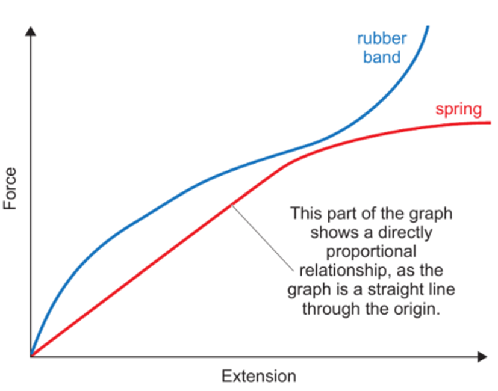
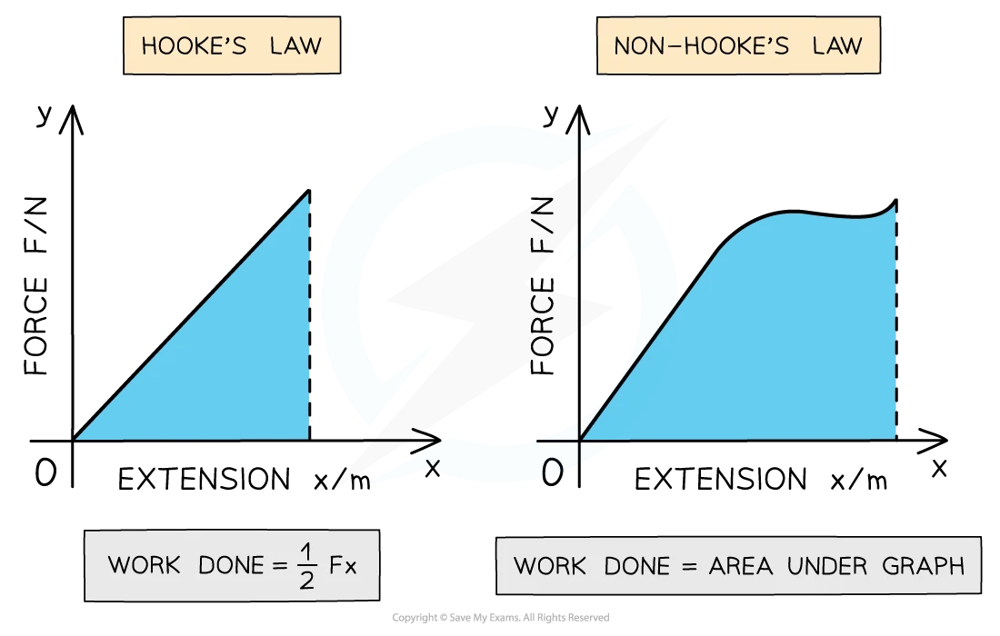
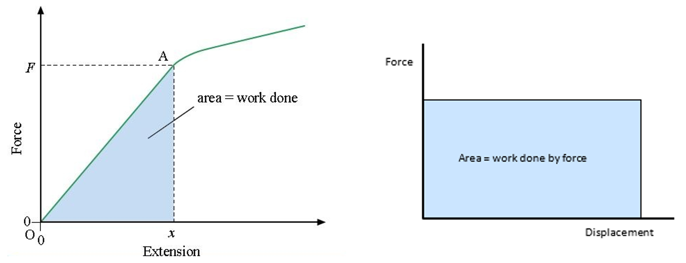

How do we describe something that deforms but returns to its original shape when forces are removed?
elastic
What do we call the difference between a spring's stretched length and its original length?
extension
How does the force needed to stretch the spring change as the spring gets longer?
increases
Convert:
200g =______ kg
0.2 kg








What safety precaution is important?
Wear eye protection in case the spring snaps.
Why is eye level important when reading the ruler?
To avoid parallax error.
What is the limit of proportionality?
The point where extension no longer increases proportionally with force.
What happens if the elastic limit is exceeded?
The spring becomes permanently stretched and may not return to its original shape.

